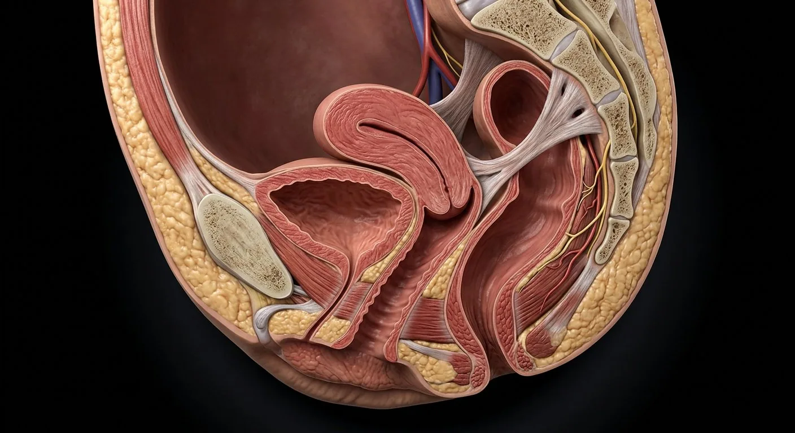

How this part of the body works
Deep regional anatomy of the female pelvis: pouches, cardinal ligaments, pelvic floor and perineum.
Read the anatomy, part by part
These 10 structures correspond to the chapter’s regional illustration or schematic. Each entry separates location, function and a clinical point.
Urinary bladder
Reservoir behind the pubic symphysis.
What it doesStores urine.
Clinical connectionStress incontinence follows pelvic-floor weakness.
Female urethra
Short 4 cm tube to the vestibule.
What it doesVoiding.
Clinical connectionShort length explains higher UTI rates in women.
Vagina
Muscular canal from cervix to vestibule.
What it doesIntercourse, menstrual flow, birth canal.
Clinical connectionAnteverted uterus rests on its anterior wall; pessaries sit here.
Uterus & cervix (relations)
Anteverted over the bladder, pouch behind.
What it doesGestation and menstruation.
Clinical connectionRetroversion is a normal variant in ~20%.
Vesico- & recto-uterine pouches
Peritoneal recesses front and back of uterus.
What it doesAllow organ movement; collect free fluid.
Clinical connectionThe recto-uterine pouch is the most dependent — pus collects there.
Rectum
Terminal bowel behind the vagina.
What it doesStool storage.
Clinical connectionRectovaginal examination assesses both walls.
Anal canal & sphincters
Internal + external sphincters with puborectalis.
What it doesContinence.
Clinical connectionObstetric injury to the sphincter causes incontinence.
Levator ani & pelvic floor
Muscular sheet from pubis to coccyx.
What it doesVisceral support; anorectal angle.
Clinical connectionPelvic organ prolapse follows levator damage in childbirth.
Cardinal & uterosacral ligaments
Condensed endopelvic fascia at cervix sides.
What it doesSuspend cervix and upper vagina.
Clinical connectionTheir laxity causes uterine prolapse.
Pudendal nerve & vessels
S2–S4 through the pudendal (Alcock's) canal.
What it doesPerineal sensation and sphincter motor.
Clinical connectionPudendal block anaesthetises the perineum for delivery.
Deeper structures and tissue layers
These 10 additional entries give anatomical context. They are deliberately not assigned a photographic pin on the regional image.
Related deep chapters: Pelvic support & surgical planes, Clitoral erectile complex.
Broad ligament
Double peritoneal sheet draped over uterus, tubes and associated structures.
What it doesSupports relationships but is not the main mechanical uterine support.
Clinical connectionUreter and uterine vessels course at its base.
Clitoral glans
External distal part beneath or exposed by the hood; dense sensory innervation and distinct histology from cavernous bodies.
What it doesConveys fine sensation.
Clinical connectionDo not describe the glans as a paired cavernous body.
Mesometrium
Largest sheet of broad ligament lateral to uterus.
What it doesConveys uterine vessels and connective tissue in base.
Clinical connectionSurgical dissection exposes adjacent ureter.
Clitoral prepuce
Fold of skin derived from the anterior labia minora covering part of the glans.
What it doesProtects and permits mobility of glans.
Clinical connectionIts form and degree of coverage vary normally.
Mesosalpinx
Broad ligament portion related to uterine tube.
What it doesSupports tube and its vessels.
Clinical connectionTubal surgery separates this vascular fold.
Clitoral body
Midline body formed by apposition of the paired corpora cavernosa, deep to the external glans.
What it doesEngorges via cavernous vascular spaces.
Clinical connectionThe externally visible part understates total size.
Mesovarium
Short fold suspending ovarian hilum from posterior broad ligament.
What it doesTransmits vessels to ovary.
Clinical connectionDistinct from the suspensory ovarian ligament.
Right corpus cavernosum
One of the paired erectile cylinders of the clitoral body, enclosed by tunica albuginea.
What it doesFills with blood during arousal.
Clinical connectionSeparate it anatomically from the vestibular bulb.
Round ligament
Band from uterine cornu through inguinal canal to labium majus.
What it doesHelps maintain anteversion; not principal apical support.
Clinical connectionRelevant to round-ligament pain and inguinal surgery.
Left corpus cavernosum
Contralateral cavernous cylinder joining the body along the midline.
What it doesContributes to body rigidity and expansion.
Clinical connectionPaired anatomy can be traced into the crura.
Five questions about Female pelvis & perineum
Short answers grounded in the structures described above. Use the illustrated guide for anatomical context.
Which organs are located in the female pelvis?
The female pelvis contains bladder, uterus, cervix, vagina and rectum, with ovaries and uterine tubes toward the lateral pelvic regions.
What supports the uterus and pelvic organs?
Pelvic-floor muscles and connective-tissue attachments provide key support. The broad ligament is a peritoneal fold, not the sole load-bearing support.
Where is the urinary bladder in the female pelvis?
Reservoir behind the pubic symphysis. Function: Stores urine.
Where is the vagina located?
Muscular canal from cervix to vestibule. Function: Intercourse, menstrual flow, birth canal.
What is the function of the vesico- & recto-uterine pouches?
Function: Allow organ movement; collect free fluid. Peritoneal recesses front and back of uterus.
Further reading
General anatomy references and related source chapters for continued study. These links do not make the digital illustrations clinical images or certify every anatomical variant.
This educational material does not provide medical advice, diagnosis or treatment. A named clinical reviewer has not been claimed for this page.
Open the interactive plate, pins, animated schematic and self-test.